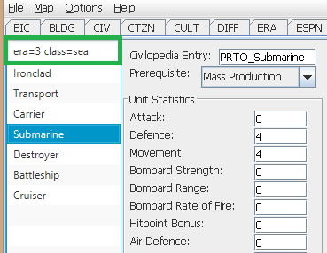
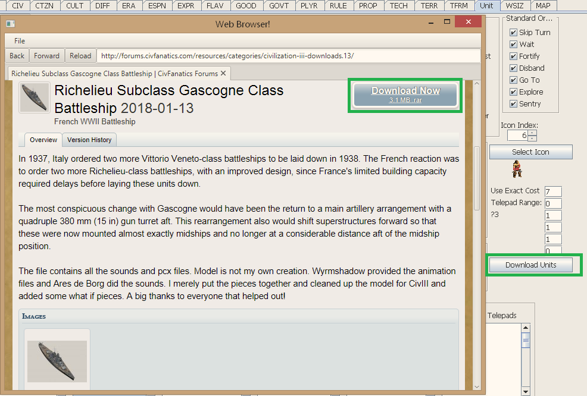
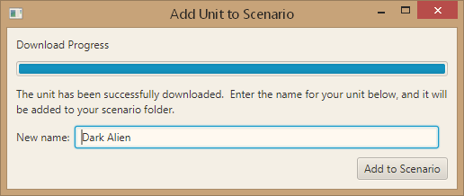

The Unit Tab behaves similarly to the unit tab in the Firaxis editor. You can help build out the documentation of standard functionality. For now, this page documents functionality unique to this editor.
You can add, delete, and rename units by right-clicking on the unit in the unit list to the left, and selecting the appropriate option.
Warrior will be moved between Spearman and Swordsman
You can re-order units in the list by dragging and dropping them. Upon releasing the mouse, the unit you are dragging will henceforth be placed after the unit the mouse was hovering over when released. In other words, it will be after the unit with a medium-blue background, and with a black line underneath its name.
The list of available filters can be viewed here.
You can filter the unit list by typing in the input box above the list of units (version 1.13 and later).
Some filters support an equals operand, some support greater than, less than, and equals operand (referred to as GT, LT, EQ; symbols >, <, and =), and the unit name filter does not require an operand.
You can use more than one filter; when doing so include a space between filters. For example, "era=3 ship attack>5" searches for units in the third era which have "ship" in their name and have an attack of more than 5. A unit must pass all of the filters to not be filtered out.
You may note that as you are entering a term, all units are filtered out. That is okay. If you've typed "atta", then as the editor doesn't see a >, <, or = symbol, it is currently filtering for units whose name includes "atta", which is most likely none. Once you enter your query in full, it will work.
Similarly, text-based queries will only filter once the full text is entered. "availableTo=Gre" will not filter, as the editor will not find a civilization named "Gre" to filter on, but once you've typed "availableTo=Greece", the filter will apply.
Text-based queries may use terms that have spaces in them (e.g. "The Ottoman Empire"), so long as quotes surround the search term that has spaces (thus, availableTo="The Ottoman Empire").
The "Download Units" button allows you to download units directly from CFC into your scenario.
Browsing CFC to select a unit to download
In order to successfully download units, you must:
In addition, there are a couple limitations on the types of units available to be downloaded:
The Download Units functionality works by using a web browser integrated into the editor, which has been customized to detect when you click a "Download" link from the Downloads Database. Simply browse the Downloads Database as you normally would, and when you find a unit you would like to add, click the normal Download button from the database. The editor will detect this, download the unit (with a progress bar), fill in the default name once the download completes (based on the name of the file uploaded to CFC by its creator), and let you customize the name before adding it to the scenario. It will handle renaming the unit folder and files for you if you decide to change the default name.

A unit downloading
The name fills in when the download finishes
If you find the Download Units functionality useful, or if you would like to use it but are having difficulty getting it working, you are encouraged to post in the CFC thread. The basic idea can be extended to other areas as well (leaderheads, PCX files, etc.), but has been a low priority due to few people having commented on using the Download Units functionality.
If you use the modern, filterable unit lists (the default since 1.10), the unit will not appear in the unit list until the scenario is saved and the editor is restarted. This has been added as an issue to be fixed.
Once you've selected a unit, you can choose an icon for it from the units_32.pcx file graphically, rather than having to manually select an index (which is still possible as well). To do so, click the "Select Icon" button on the right side. This will bring up a window showing you the current icon, and the units_32.pcx file (with a gray background). To select a new icon, click the one you want. Its icon will now show up at the top as the selected icon. Click Apply to close the window and keep the new icon, or Cancel to close the window and keep the old icon.